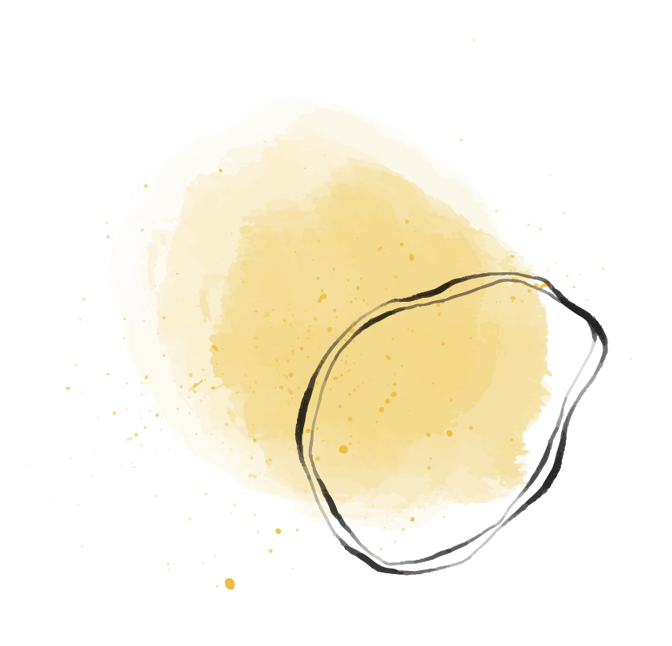
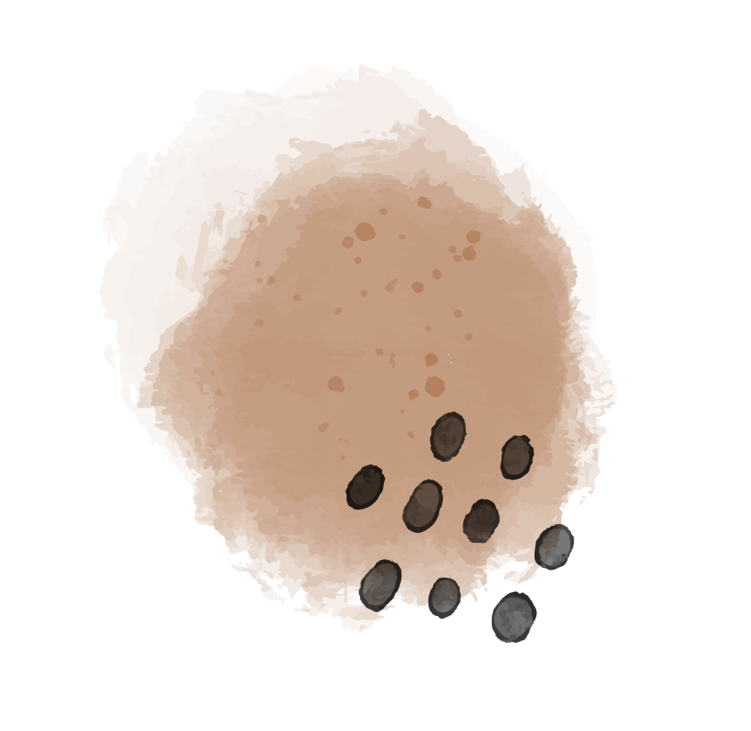
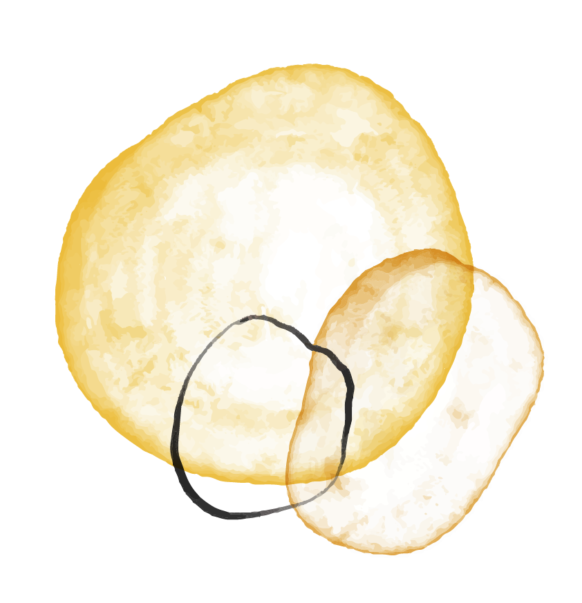
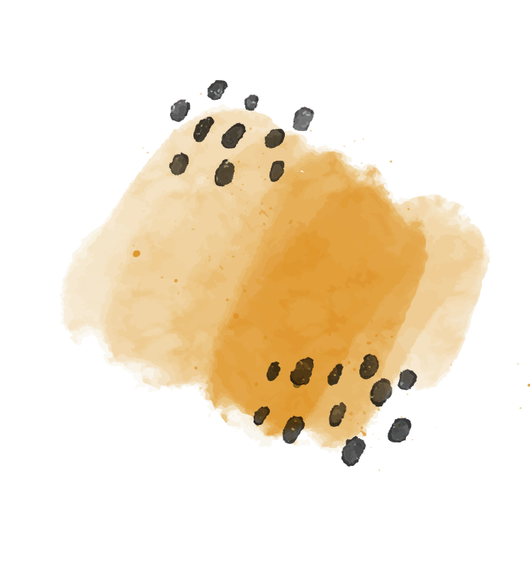

Compétence 01
Identité visuelle
Je crée des univers de marque complets : logos, chartes graphiques et systèmes visuels. J’aime donner une vraie personnalité aux projets et faire en sorte que tout soit cohérent et reconnaissable.

Compétence 02
Supports de communication
Je conçois différents supports, que ce soit pour le print ou le digital : affiches, flyers, brochures… L’objectif, c’est toujours de capter l’attention tout en restant clair et efficace.

Compétence 03
Dessin & illustration
J’aime créer des visuels plus personnels à travers le dessin et l’illustration. Ça me permet de développer des univers graphiques uniques et d’ajouter une touche plus créative à mes projets.

Compétence 04
Photographie
Je réalise des prises de vue en travaillant le cadrage, la lumière et l’ambiance. Je fais aussi de la retouche pour améliorer et donner une cohérence aux images.

Compétence 05
Vidéo & montage
Je crée des contenus vidéo, de la captation jusqu’au montage. J’aime raconter des histoires en images, avec un rythme et une ambiance.
